Keva Planks¶
This domain features an ABB YuMi Robot, and multiple Keva planks as shown below.
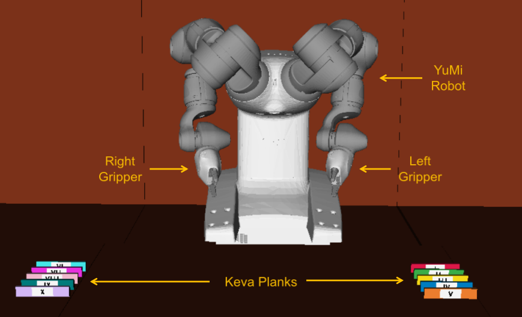{kind=link}
Note
You can learn more about what to do and how to do here.
In all the problems for this domain, the YuMi robot must build structures as shown in the goal configuration using the Keva planks. Keva planks are laser-cut wooden planks with uniform geometry. And, YuMi can pick up the planks in front of it one after another.
The actions that the YuMi robot can take in this environment are:
Action Group: Pick up
1. Pick up a plank: Use this action to pick up the selected plank with the selected gripper. A gripper can only hold one plank at a time!
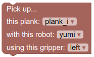{kind=link}
Action Group: Place vertical
2. Put on table vertically: Use this action to pick up the selected plank from the table with the selected gripper. A gripper can only hold one plank at a time!
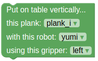{kind=link}
3. Stack vertically: Use this action to put the selected plank on top of another plank, such that it stands vertically. The selected gripper has to be holding the plank before it can place it!
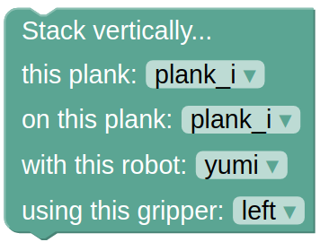{kind=link}
Action Group: Place sideways
4. Put on table sideways: Use this action to put the selected plank on the table, such that it lies on its side. The selected gripper has to be holding the plank before it can place it!
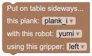{kind=link}
5. Stack sideways: Use this action to put the selected plank on top of another (single) plank, such that the placed plank lies on its side. The selected gripper has to be holding the plank before it can place it!
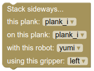{kind=link}
6. Stack sideways on two horizontal planks: Use this action to put the selected plank on top of two other planks that are horizontal, such that the placed plank lies on its side. The selected gripper has to be holding the plank before it can place it!
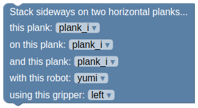{kind=link}
7. Stack sideways on two vertical planks: Use this action to put the selected plank on top of two other planks that are vertical, such that the placed plank lies on its side. The selected gripper has to be holding the plank before it can place it!
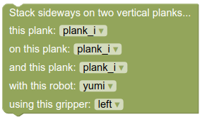{kind=link}
8. Stack sideways on two sideways planks: Use this action to put the selected plank on top of two other planks that are sideways, such that the placed plank lies on its side as well. The selected gripper has to be holding the plank before it can place it!
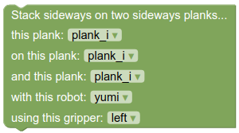{kind=link}
Action Group: Place horizontal
9. Stack horizontally: Use this action to put the selected plank on top of another plank, such that it lies horizontally. The selected gripper has to be holding the plank before it can place it!
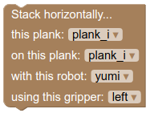{kind=link}
10. Stack horizontally on two horizontal planks: Use this action to put the selected plank on top of two other planks that are horizontal, such that the placed plank lies horizontally. The selected gripper has to be holding the plank before it can place it!

11. Stack horizontally on two vertical planks: Use this action to put the selected plank on top of two other planks that are vertical, such that the placed plank lies horizontally. The selected gripper has to be holding the plank before it can place it!

12. Stack horizontally on two sideways planks: Use this action to put the selected plank on top of two other planks that are sideways, such that the placed plank lies horizontally. The selected gripper has to be holding the plank before it can place it!
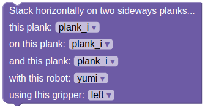{kind=link}